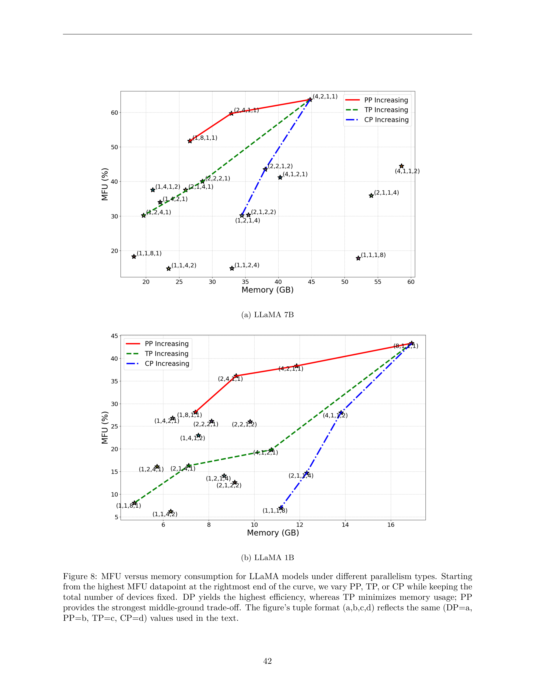
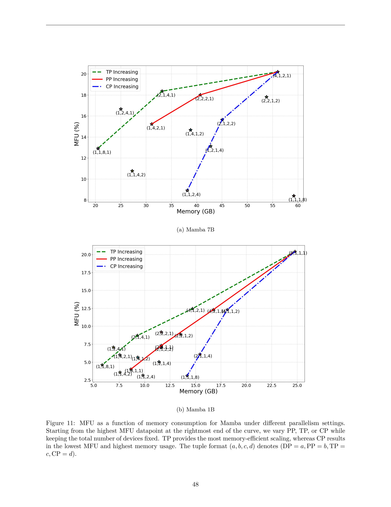

核心问题
随着 LLM 规模指数增长（从 BERT 110M 到 GPT-3 175B 再到万亿参数），单设备已无法承载模型训练与推理。如何组合多种并行策略（DP/TP/PP/CP/EP）在有限硬件资源下最大化 Model FLOPs Utilization (MFU)、最小化通信开销、满足内存约束，成为分布式 AI 系统的核心挑战。
论文贡献
- 系统性综述: 全面回顾分布式混合并行策略，涵盖数据并行、模型并行、激活并行的所有变体及其组合方式
- 理论分析: 对 GQA（Grouped Query Attention）、MLP（SwiGLU）、Mamba-2（SSD）三种核心模块进行 FLOPs、内存、通信的统一数学建模
- 实验验证: 在 Ascend 910B NPU 集群上对 LLaMA 1B/7B 和 Mamba 1B/7B 进行 16+ 种并行配置的系统性评测
- 设计指南: 提供从问题公式化、策略选择、SLO 权衡到框架实现的完整系统设计流程
- 开源洞察: 对比 Megatron-LM、NeMo、DeepSpeed、MindSpeed-LLM 等主流框架的实现差异
核心评估指标
模型实际达到的 FLOPs 与硬件峰值 FLOPs 的比值。衡量计算资源利用效率的核心指标，越高越好。
核心优化目标推理场景下从输入到生成第一个 token 的延迟。影响用户体验的关键指标，越低越好。
推理关键指标推理场景下每个生成 token 的平均时间。反映解码阶段效率。
推理关键指标训练吞吐量（每秒处理 token 数）和推理吞吐量（每秒服务请求数）。直接影响训练成本和推理服务能力。
核心性能指标问题公式化
给定模型架构 M、硬件集群 H、全局 batch size B、序列长度 S，寻找最优并行配置 P = (DP, PP, TP, CP, EP) 使得:
这是一个组合优化问题，搜索空间随模型层数和并行维度指数增长。例如 80 层 Transformer 可产生约 10^125 种配置组合。
分布式集合通信操作
分布式并行策略的效率直接依赖于底层集合通信操作的性能。论文系统性地分析了六种核心集合操作的数据移动模式和通信量。
Reduce (归约)
将多个设备上的数据按元素进行归约操作（求和、最大值、最小值等）。根设备接收最终结果。
N = 设备数, n = 每设备元素数
Gather (收集)
根设备从所有设备收集各自的数据分片，组合成完整数据。每个设备 i 贡献数据分片 i。
AllGather (全收集)
所有设备同时执行 Gather 操作，每个设备最终都拥有完整数据。比单纯 Gather 更常用。
优化: 环形 AllGather 可将单次通信量降至 n * element_size，共 N-1 步
ReduceScatter (归约分散)
结合 Reduce 和 Scatter：先按元素归约，再将结果分散到各设备。每个设备获得归约后数据的一个分片。
关键应用: AllReduce 的两阶段实现（ReduceScatter + AllGather）
AllReduce (全归约)
所有设备上的数据按元素归约（通常是求和），每个设备都获得完整的归约结果。分布式训练中最关键的集合操作，用于梯度同步。
1. ReduceScatter: 每个设备获得 1/N 的归约结果
2. AllGather: 每个设备获取完整结果
总通信量: 2 * (N-1) * n * element_size per device
最优实现: 环形或树形拓扑
All-to-All (全对全)
每个设备向所有其他设备发送不同的数据分片。通信模式最复杂，常见于 Expert Parallelism 中的 token 路由。
总网络流量: N * (N-1) * n * element_size
通信优化关键洞察
Ring AllReduce 将每设备通信量从 O(N*n) 降至 O(2*(N-1)*n/N)，在大规模场景下差异巨大。现代框架（NCCL、DeepEP）利用硬件拓扑感知（NVLink、InfiniBand）进一步优化带宽利用率。
并行策略全景
= 3D/4D/5D 混合并行
3.1 数据并行 (Data Parallelism, DP)
每个设备持有完整模型副本，处理不同的数据 batch。每步结束后通过 AllReduce 同步梯度。
优点
- 实现简单，通信开销最小
- 通过分布式数据提高吞吐量
- 前向/后向传播中通信极少
缺点
- 每设备需完整模型副本
- 梯度同步开销大（尤其大模型）
- 对超大模型内存效率低
3.2 流水线并行 (Pipeline Parallelism, PP)
将模型按层划分到不同设备，数据以 micro-batch 形式在设备间流水线式传递。设备 i 处理层 [L_i, L_{i+1})。
流水线气泡 (Pipeline Bubble)
当最后一个 micro-batch 离开设备前，部分设备处于空闲状态。气泡大小取决于 stage 数量和 micro-batch 数量。GPipe、PipeDream、Interleaved 1F1B 等调度策略致力于最小化气泡。
3.3 张量并行 (Tensor Parallelism, TP)
将单层内的矩阵乘法切分到多个设备。例如将 GEMM Y = XA 按列切分 A 为 [A1, A2]，两设备分别计算 Y1=XA1, Y2=XA2，最后通过 AllReduce 合并结果。
- Column Parallel: Y = X[A1; A2] = [XA1, XA2] (按列切分权重)
- Row Parallel: Y = X1A1 + X2A2 (按行切分，需 AllReduce)
- Megatron-LM 模式: Attention 和 MLP 分别采用不同切分策略
3.4 上下文并行 / 序列并行 (Context/Sequence Parallelism, CP/SP)
将序列长度维度切分到多个设备。设备 i 处理序列分片 S[i:i+s/CP]。对于超长序列（128K+ tokens）尤为关键。
LASP (Layer-Alternating SP)
Megatron-LM 提出的改进策略，某些层采用序列并行（切分序列），某些层采用张量并行（切分权重），通过 LayerNorm 的巧妙实现减少通信。
3.5 Expert 并行 (Expert Parallelism, EP)
针对 Mixture-of-Experts (MoE) 架构的专用并行策略。每个设备持有不同的 Expert 子集，token 通过路由机制分配到对应设备。
1. 动态路由: 每个 token 由 gating network 决定发送到哪个 expert
2. 负载均衡: expert 间 token 分布不均导致计算热点
3. 通信开销: token 跨设备路由需要 All-to-All 通信
4. 容量约束: 每设备 expert 有处理上限，超出 token 被丢弃
3.6 策略对比总结
| 策略 | 核心优势 | 核心劣势 | 适用场景 |
|---|---|---|---|
| DP | 实现简单，吞吐高 | 需完整模型副本 | 模型可放入单设备 |
| PP | 减少每设备内存 | 流水线气泡降低效率 | 深层网络，内存受限 |
| TP | 切分权重与激活内存 | 层间通信开销大 | 需要高带宽互联 |
| CP | 支持超长序列 | 负载均衡困难 | 注意力密集型模型 |
| EP | 高效扩展 MoE | 路由与负载平衡复杂 | Mixture-of-Experts |
内存优化技术
4.1 激活检查点 (Activation Checkpointing)
不在前向传播中保存所有激活值，仅保存部分检查点。反向传播时重新计算未保存的激活值。以计算换内存。
有检查点: 内存 = O(sqrt(L) * batch * seq_len * hidden) + O(L) 重计算代价
L = 层数
4.2 选择性激活释放 (Selective Activation Release)
在前向传播完成后立即释放不再需要的激活值，而非等到整个 batch 完成。反向传播前保留必要的激活值。
优化效果
相比朴素检查点可额外节省 20-30% 激活内存，尤其对深层 Transformer 网络显著。
4.3 梯度卸载 (Gradient Offloading)
将梯度从 GPU 内存转移到 CPU 内存，在优化器步骤时再搬回。适用于大 batch size 训练。
4.4 ZeRO (Zero Redundancy Optimizer)
DeepSpeed 提出的三阶段优化策略，消除数据并行中的冗余状态。
ZeRO-1: 优化器状态切分
将优化器状态（如 Adam 的动量和方差）切分到不同设备，每设备只持有 1/N 的优化器状态。通信开销增加有限。
ZeRO-2: 梯度切分
在 ZeRO-1 基础上进一步切分梯度，每设备只接收和处理其负责的梯度分片。进一步减少冗余。
ZeRO-3: 参数切分
将模型参数也切分到不同设备。前向/后向传播时通过 AllGather 临时获取所需参数。内存最优但通信开销最大。
4.5 内存对比分析
- 权重内存: TP < CP ≈ DP。TP 将权重切分到 N 个设备，CP 和 DP 每设备持有完整权重
- 激活内存: CP ≈ DP < TP（某些情况下）。CP 切分序列维度，DP 切分 batch 维度，TP 在某些层需要保存额外中间结果
- 优化器状态: ZeRO 系列可将其从 O(N_params) 降至 O(N_params / DP_degree)
通信-计算重叠技术
通信-计算重叠是提升 MFU 的核心技术之一。基本思想是将通信操作与计算操作在时间上交错执行，利用不同的硬件资源（网络 vs 计算单元）实现并发。
5.1 数据分解重叠 (Data Decomposition Overlap)
将大的计算任务（如大矩阵乘法）分解为多个小 chunk，每个 chunk 计算后立即触发对应通信，而非等待全部计算完成再统一通信。
重叠模式: [计算chunk1]->[通信chunk1]->[计算chunk2]->[通信chunk2]...
关键: 计算和通信在不同硬件上并行执行
5.2 算法分解重叠 (Algorithm Decom Overlap)
将算法拆分为独立的部分，某些部分需要通信，某些部分不需要。例如 LayerNorm 不需要跨设备同步，可放在通信间隙执行。
5.3 内核融合重叠 (Kernel Fusion Overlap)
通过 CUDA Graph 和融合内核将多个小操作合并为大操作，减少内核启动开销，同时为通信重叠创造更大的计算窗口。
5.4 自动调优 (Auto-tuning)
不同 chunk 大小、通信启动时机、重叠策略对性能影响显著。自动调优系统通过搜索找到最优配置。
关键洞察
最优 chunk 大小取决于网络带宽、计算强度、硬件拓扑。经验法则: chunk 大小应使计算时间 >= 通信时间，但 chunk 过大则失去重叠灵活性。
混合并行系统设计
6.1 3D 混合并行
组合三种基本并行策略: DP × PP × TP = world_size。这是当前大规模训练的主流方案。
例如 8 卡: (4, 2, 1), (2, 2, 2), (1, 8, 1), (8, 1, 1) 等
6.2 4D 混合并行
在 3D 基础上加入序列/上下文并行 (CP): DP × PP × TP × CP = world_size。适用于超长序列训练场景。
6.3 DP 组内并行设计
在每个 DP 组内部，进一步组合 PP/TP/CP:
DP 组 = {PP, TP}
经典 3D 并行。PP 切分层，TP 切分层内矩阵。适用于中等长度序列的标准 Transformer 训练。
DP 组 = {PP, CP}
避免 TP 的 AllReduce 开销，用 CP 替代。适用于序列极长但模型宽度不大的场景。
DP 组 = {PP, TP, CP}
最灵活但也最复杂。需要仔细调优以避免通信成为瓶颈。适用于极端规模模型。
DP 组 = {TP, CP}
无 PP 的配置，避免流水线气泡。适用于层数不多但每层计算密集的场景。
6.4 通信组设计
混合并行需要管理多个通信组:
- TP 组同一张量并行组内的设备，每层执行 AllReduce
- PP 组同一流水线组内的设备，传递 micro-batch 激活值
- CP 组同一上下文并行组内的设备，传递序列分片的 KV cache
- DP 组同一数据并行组内的设备，执行梯度 AllReduce
主流框架对比
| 框架 | 核心并行支持 | 特色功能 | 通信库 |
|---|---|---|---|
| Megatron-LM | TP, PP, DP, CP, EP | Tensor Parallelism 开创者；LASP；GQA 优化；MoE 支持 | NCCL |
| NeMo (NVIDIA) | TP, PP, DP, CP, EP | Megatron-LM 基础上增加分布式检查点、PEFT 支持、数据管道优化 | NCCL |
| DeepSpeed (Microsoft) | ZeRO-DP, PP, TP, EP | ZeRO 系列优化器；Inference 引擎；激活检查点；CPU Offloading | NCCL / DeepSpeed Comms |
| MindSpeed-LLM (华为) | TP, PP, DP, CP, EP | Ascend NPU 原生支持；HCCL 通信库；MoE 优化；半精度训练 | HCCL |
| SageMaker (AWS) | DP, PP, TP | 云原生；自动缩放；多实例训练；与 AWS 生态集成 | NCCL / EFA |
框架选择建议
NVIDIA GPU 生态首选 Megatron-LM/NeMo；需要 ZeRO 内存优化选 DeepSpeed；Ascend NPU 选 MindSpeed-LLM；云部署考虑 SageMaker。实际项目中经常组合使用（如 DeepSpeed + Megatron-LM）。
理论分析: FLOPs、内存与通信建模
论文第 5 节对 GQA、MLP 和 Mamba 三种核心模块在不同并行策略下的 FLOPs、激活内存、权重内存和通信开销进行了统一数学建模。以下为核心结论。
8.1 GQA (Grouped Query Attention) 分析
FLOPs 不变性: 总计算量在 TP/CP/DP 三种策略下完全不变，只是分配到不同设备。
FLOPs 公式
关键发现: FLOPs(TP) = FLOPs(CP) = FLOPs(DP)
激活内存对比
每设备激活内存:
- TP: (b*s*d + 2*b*s*d/TP + 2*b*s*d/TP*k/a) * a_byte
- CP: (b*d*s/CP + 2*b*d*s/CP + 2*b*d*s/CP*k/a) * a_byte
- DP: (s*d*b/DP + 2*s*d*b/DP + 2*s*d*b/DP*k/a) * a_byte
结论: memory_act(TP) > memory_act(CP) ≈ memory_act(DP)
权重内存对比
每设备权重内存:
- TP: 2*(d/TP)^2*(1 + k/a) * w_byte (权重被切分)
- CP: 2*d^2*(1 + k/a) * w_byte (完整权重)
- DP: 2*d^2*(1 + k/a) * w_byte (完整权重)
结论: memory_wt(TP) < memory_wt(CP) ≈ memory_wt(DP)
8.2 MLP (SwiGLU) 分析
FLOPs 不变性同样成立。激活内存和权重内存的结论与 GQA 一致。
FLOPs 不变性同样成立: FLOPs(TP) = FLOPs(CP) = FLOPs(DP)
激活内存: memory_act(TP) > memory_act(CP) ≈ memory_act(DP)
权重内存: memory_wt(TP) < memory_wt(CP) ≈ memory_wt(DP)
8.3 Mamba-2 (SSD) 分析
Mamba-2 的核心是 State Space Duality (SSD)，将 SSM 递归转换为分块矩阵乘法，利用并行扫描 (parallel scan) 实现线性复杂度。
FLOPs 公式
= 2*b*[ (s/l)*h*l^2*n + (s/l)*h*l^2*p + (s/l)*h*l*p*n + h*(s/l)*p*n + (s/l)*h*p*n*l ]
+ 2*b*s*d*d_in_proj + 2*b*s*d_inner*d
其中: s=序列长度, l=chunk大小, h=head数, n=state维度, p=head维度
关键: 使用 parallel scan 后 inter-chunk 计算从 O((s/l)^2) 降至 O(s/l)
Mamba 通信对比
| 策略 | 通信量 | 集合操作 |
|---|---|---|
| TPSP | O(d * d_state * seqlen) | AllReduce |
| CP | O(d * d_state * CP) | All-Gather |
| DP | 0 | - |
由于通常 CP << seqlen，CP 的通信开销远小于 TPSP。这是 Mamba 架构下 CP 优于 TP 的重要原因。
8.4 理论分析核心结论
- FLOPs 不变性: 无论选择 TP/CP/DP，总计算量不变，只是分配到不同设备
- 通信成本是关键: 通信量和可用带宽共同决定最优配置
- TP 权重内存最优: TP 将权重切分到 N 设备，内存减少 N 倍
- CP/DP 激活内存最优: 当序列或 batch 是内存瓶颈时优先
- Mamba 特殊考虑: CP 通信量 < TPSP 通信量（因为 CP << seqlen）
案例研究: Ascend 910B 上的实验结果
实验平台
单台 8 卡 Ascend 910B NPU，每卡 60GB HBM，378.88 TFLOPS GEMM 算力。全局 batch size = 1024，序列长度 = 4096，micro-batch size = 1，步 token 数 = 4M。
9.1 LLaMA 7B 实验结果
最佳配置 (4,2,1,1) MFU=63.7%，最差配置 (1,1,4,2) MFU=14.8%。
| 配置 (DP,PP,TP,CP) | 步时间 (s) | 吞吐 (K tok/s) | 内存 (GB) | MFU (%) |
|---|---|---|---|---|
| (4,2,1,1) ⭐ | 101.8 | 41.2 | 45.9 | 63.7 |
| (2,4,1,1) | 108.5 | 38.6 | 33.7 | 59.7 |
| (1,8,1,1) | 125.5 | 33.4 | 27.2 | 51.7 |
| (4,1,2,1) | 157.3 | 26.7 | 41.2 | 41.2 |
| (4,1,1,2) | 145.7 | 28.8 | 60.0 | 44.5 |
| (2,2,1,2) | 149.2 | 28.1 | 38.9 | 43.5 |
| (2,2,2,1) | 162.2 | 25.9 | 29.2 | 40.0 |
| (1,1,4,2) 🚫 | 437.1 | 9.6 | 24.0 | 14.8 |
最佳配置 (4,2,1,1): DP=4 保证足够全局 batch size，PP=2 将模型切分到 2 卡减少每卡内存（45.9GB < 60GB），TP=1 和 CP=1 避免不必要的通信开销。Cube (GEMM) 操作占总运行时间 77.2%。
最差配置 (1,1,4,2): TP=4 将 GEMM 切分成 4 份降低矩阵尺寸和 tile 重用，CP=2 进一步切分序列。TP 通信占 22.4%，CP 通信占 12.1%，Cube 操作仅占 46.5%。设备大量时间等待通信而非计算。
9.2 LLaMA 1B 实验结果
最佳配置 (8,1,1,1) 纯 DP，MFU=43.3%。
| 配置 (DP,PP,TP,CP) | 步时间 (s) | 吞吐 (K tok/s) | 内存 (GB) | MFU (%) |
|---|---|---|---|---|
| (8,1,1,1) ⭐ | 28.3 | 148.4 | 17.3 | 43.3 |
| (4,2,1,1) | 32.1 | 130.6 | 12.1 | 38.3 |
| (2,4,1,1) | 33.9 | 123.9 | 9.4 | 36.1 |
| (4,1,2,1) | 61.7 | 68.0 | 11.0 | 19.8 |
| (1,1,4,2) 🚫 | 197.0 | 21.3 | 6.5 | 6.2 |
关键发现: 1B 模型足够小（17.3GB < 60GB），纯 DP 是最佳选择。模型和激活都放入单设备内存，无需任何模型并行，通信开销最小。Cube 操作占 64.0%。
9.3 Mamba 7B 实验结果
最佳配置 (4,1,2,1) MFU=20.2%，整体 MFU 低于 LLaMA。
| 配置 (DP,PP,TP,CP) | 步时间 (s) | 吞吐 (K tok/s) | 内存 (GB) | MFU (%) |
|---|---|---|---|---|
| (4,1,2,1) ⭐ | 191.6 | 21.9 | 56.0 | 20.2 |
| (2,1,4,1) | 220.8 | 19.0 | 38.3 | 16.4 |
| (2,2,2,1) | 248.7 | 16.9 | 40.8 | 13.8 |
| (1,1,1,8) 🚫 | 461.1 | 9.1 | 33.4 | 8.4 |
Mamba 特殊性: Mamba-7B 无法用 DP=8 单卡放下（模型太大）。DP=4+CP=2 也不行（CP 只切分激活，不切分权重）。PP=2 因大 SSD 线性层也无法放在 2 卡。最优是 TP=2 切分大线性层和卷积分量。
Mamba 整体 MFU 低于 LLaMA（20.2% vs 63.7%），因为 Mamba 强调序列状态更新而非密集矩阵乘法，Cube 利用率天然较低。
9.4 Mamba 1B 实验结果
最佳配置 (8,1,1,1) 纯 DP，MFU=20.4%。
| 配置 (DP,PP,TP,CP) | 步时间 (s) | 吞吐 (K tok/s) | 内存 (GB) | MFU (%) |
|---|---|---|---|---|
| (8,1,1,1) ⭐ | 29.1 | 144.3 | 24.8 | 20.4 |
| (4,2,1,1) | 48.2 | 87.0 | 16.8 | 12.3 |
| (4,1,2,1) | 47.7 | 88.0 | 14.7 | 12.4 |
| (1,1,1,8) 🚫 | 191.1 | 22.0 | 14.2 | 3.1 |
Mamba vs LLaMA 1B 差异: Mamba-1B 纯 DP 时 Cube 占 42.8%，Vector 占 57.1%。LLaMA-1B 纯 DP 时 Cube 占 64.0%，Vector 占 24.2%。Mamba 的向量操作占比更高是 MFU 较低的根本原因。
9.5 MFU vs 内存消耗对比图

图 8: LLaMA 模型 MFU vs 内存消耗 -- 从最高 MFU 点开始，保持设备总数固定，分别变化 PP/TP/CP。DP 产生最高效率，TP 最小化内存使用，PP 提供最佳中间权衡

图 9: Mamba 模型 MFU vs 内存消耗 -- TP 提供最高效的内存扩展，CP 产生最低 MFU 和最高内存使用。三元组格式 (a,b,c,d) 表示 (DP=a, PP=b, TP=c, CP=d)
9.6 实验总结与最佳实践
| 模型 | 最佳配置 | MFU | 最差配置 | MFU |
|---|---|---|---|---|
| LLaMA 1B | (8,1,1,1) 纯 DP | 43.3% | (1,1,4,2) | 6.2% |
| LLaMA 7B | (4,2,1,1) DP+PP | 63.7% | (1,1,4,2) | 14.8% |
| Mamba 1B | (8,1,1,1) 纯 DP | 20.4% | (1,1,1,8) | 3.1% |
| Mamba 7B | (4,1,2,1) DP+TP | 20.2% | (1,1,1,8) | 8.4% |
设计实践核心洞察
- 1.小模型 (≤1B): 优先纯 DP，模型和激活都能放入单设备内存
- 2.中等模型 (~7B): 引入有限模型并行。LLaMA 偏好 PP，Mamba 偏好 TP
- 3.超大模型: 需要更高程度的 PP/TP
- 4.超长序列: CP 变得必要，但需权衡通信开销
- 5.过度切分 (TP≥4 或 CP≥4) 通常降低 MFU，通信开销超过计算收益
自动并行化技术
手动搜索最优并行配置在大规模场景下不可行（80 层 Transformer 约 10^125 种配置）。自动并行化系统通过构建代价模型和搜索算法来自动选择最优策略。
10.1 自动并行化演进
| 系统 | 年份 | 并行类型 | 搜索/优化方法 |
|---|---|---|---|
| Piper | 2021 | PP, TP | 动态规划 |
| Alpa | 2022 | DP, PP, TP | 整数线性规划 + 动态规划 |
| Galvatron | 2022 | DP, PP, TP | 决策树剪枝 + 动态规划 |
| AMP | 2022 | PP, TP | 符号代价模型 + 动态规划 |
| Colossal-AI | 2023 | DP, PP, TP, SP | 贪心搜索 |
| Merak | 2023 | DP, PP, TP | 图分片启发式 |
| Metis | 2024 | DP, PP, TP | 剪枝搜索算法 |
| Mist | 2025 | DP, PP, TP | 混合整数线性规划 |
Alpa (2022)
将并行空间分为 inter-operator（PP/DP）和 intra-operator（TP）两层，分别用 ILP 和 DP 求解。开创了分层搜索范式，但未充分解决负载不均衡。
Colossal-AI (2023)
扩展至 4D 并行，支持 2D/2.5D/3D 张量切分。贪心分片转换和激活检查点集成。降低了拓扑约束。
Mist (2025)
联合优化内存缩减和并行策略选择。不平衡感知分层调优，通过 Pareto 前沿采样连接 inter-stage 和 intra-stage 优化。解决搜索空间爆炸和流水线不平衡问题。
10.3 自动并行化挑战
- 组合爆炸: 搜索空间随模型层数和并行维度指数增长
- 硬件异构性: 不同设备算力、内存、带宽不同，需异构感知
- 代价模型精度: 理论 FLOPs 与实际执行时间偏差受内核融合、内存访问模式影响
- 可用性: 自动化工具需要最小化代码修改，提供 PyTorch 原生体验
- 设备内并行: 最新研究开始考虑 NPU 内部多核心的细粒度并行
开放挑战与未来方向
11.1 资源利用率
尽管分布式训练和推理系统持续进步，最优硬件利用率仍是重大挑战。开销来源包括:
- 内存访问延迟（内存受限操作）
- 通信等待时间（带宽受限操作）
- 小操作的内核启动开销
- 张量形状不利于最优 tile 到并行核心
Mamba 等新兴架构的 MFU 显著低于 Transformer 架构，凸显了对模型架构设计和系统级优化的进一步研究需求。
11.2 能源考量
前沿模型接近万亿参数规模，能源约束变得与硬件可用性同等重要。OpenAI 已承诺千兆瓦级计算，Meta 投资大型核电。能源效率和可持续训练是未来关键方向。
11.3 训练与推理协同设计
训练阶段优化吞吐量，推理阶段优化延迟。如何在训练时就考虑推理部署需求（如量化、剪枝、知识蒸馏），实现训练-推理协同优化是重要趋势。
11.4 异构硬件支持
未来集群将混合使用 GPU、TPU、NPU 等不同加速器，甚至混合不同代际的芯片（如 H100 + B200）。自动并行化系统需要原生支持异构硬件。
11.5 通信库进化
NCCL、DeepEP、NVSHMEM 等通信库需要持续优化:
- 拓扑感知路由（NVLink vs InfiniBand vs Ethernet）
- 更细粒度的重叠调度
- MoE 场景下的高效 All-to-All
- 跨节点多轨通信优化
11.6 超长序列支持
128K+ tokens 的序列长度对激活内存和通信提出极端挑战。需要更智能的 CP 策略、激活压缩、KV cache 优化等技术。
论文总结
本文提供了 LLM 分布式混合并行的系统性指南，从理论分析到实验验证，从框架实现到未来挑战。核心经验法则是: 在满足内存约束的前提下，最大化数据并行度；当模型超出单设备时，优先引入 PP（Transformer）或 TP（Mamba）；避免过度切分导致通信成为瓶颈。